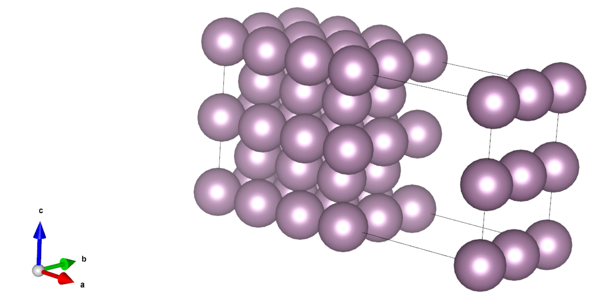
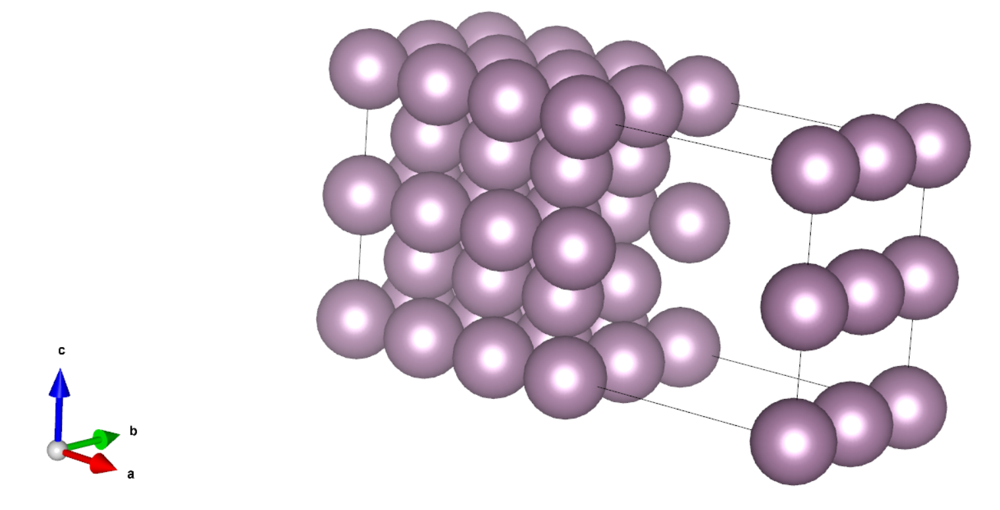
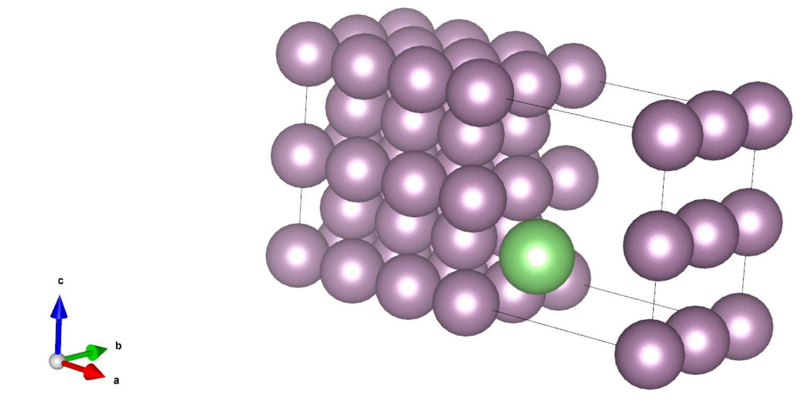

采用 ABACUS 进行表面计算（四）：表面缺陷能和吸附能计算
作者：孙亮，邮箱：l.sun@pku.edu.cn
审核：陈默涵，邮箱：mohanchen@pku.edu.cn
最后更新时间：2023/10/09
一、背景
在研究表面的稳定性时，我们经常关注表面上形成空穴、或者表面上吸附其它分子的难易程度，这两种现象可以分别用表面缺陷能和表面吸附能描述。
表面缺陷能（surface vacancy energy）定义为在表面上形成原子的空穴所需能量，缺陷能越低，则该表面越容易形成缺陷。
表面吸附能（surface adsorption energy）定义为原子、离子或分子（吸附物，adsorbate）附着在固体表面（吸附剂，adsorbent）的吸附过程中，二者结合时的能量下降，它描述了吸附剂对吸附物的吸附能力，吸附能越低，则吸附能力越强。
由于缺陷间或吸附物间的相互作用，上述两种物理量都与缺陷或吸附物在表面的覆盖率（coverage）有关，其定义为，即缺陷数或吸附物数与表面原子数之比。覆盖率越低，则缺陷间或吸附物间相互作用越弱，计算时所需的超胞也越大，实际计算中，可根据需求选择合适的覆盖率。本文档中，为了节省计算量，采取较大的覆盖率。
下面我们分别介绍这两个物理量的计算方法，并展示如何使用 ABACUS 计算。
ABACUS 中，我们可以采用平面波基组、原子轨道基组下的 Kohn-Sham DFT（KSDFT）和无轨道密度泛函理论等电子结构计算方法来计算所需的能量，也可以调用 DeePMD 势函数。接下来，我们以平面波基组下的 KSDFT 为例介绍其计算方法，如果需要使用其它的能量求解器，只需要设置 INPUT 文件里的 esolver_type、basis_type 更换能量求解器并设置相应求解器的参数即可。
二、ABACUS 计算表面缺陷能具体流程
表面缺陷能可定义为
其中为带缺陷表面构型的总能量，为体材料中每原子的能量，为无缺陷表面构型的总能量，注意计算所需构型比少一个原子，即缺陷。
因此为了计算某种表面的缺陷能，我们需要进行三次自洽迭代（scf）计算，分别得到上述三个能量。
注意下面的例子中，为了提升效率，我们采用了较低的能量截断值（20 Ry）以及较少的 k 点（gamma 点），实际计算中，需要对二者做收敛性测试。
如果计算体系有磁性原子，要注意体材料的时候是否要加上磁性的计算。
计算实例：钼体心立方 110 表面缺陷能
1.1 计算体材料能量
这一步我们用晶格弛豫方法找到体心立方（bcc） Mo 的晶格常数以及平衡能量。
运行算例后，用 grep FINAL_ETOT_IS OUT.example/running_cell-relax.log 得到总能量为 -1861.827 eV，由于原胞内只有一个原子，因此。
从 OUT.example/STRU_ION_D 文件中可以读到平衡晶格常数为，它将用于表面构型的构造。
1.2 计算表面体系能量
这一步我们参考文献[1]，搭建了一个 7 层的 Mo bcc(110)表面体系，每层包含 4 个原子，如下图所示：

计算其总能量时，可以根据实际需要选择是否做结构优化，这里为了效率更高，我们没有做结构优化。
用 grep FINAL_ETOT_IS OUT.example/running_scf.log 得到总能量为 -52129.480 eV，因此。
1.3 计算带缺陷的表面体系能量
第三步我们搭建带缺陷的表面体系，方法是从表面上移除一个原子，如下图所示，移除了表面中心的原子：

此算例同样没有做结构优化。
用 grep FINAL_ETOT_IS OUT.example/running_scf.log 得到总能量为 -50265.933 eV，因此。
1.4 计算缺陷能
对于上述构型，最终的缺陷能。
三、ABACUS 计算表面吸附能具体流程
表面吸附能可定义为
其中为吸附物与吸附剂结合后的总能量，为吸附剂体系的总能量，为吸附剂体系的总能量，为零点能，注意计算所需构型的原子数为与之和。
因此为了计算吸附能，我们需要进行三次自洽迭代（scf）计算，分别得到上述三个能量。
计算实例：Li 原子在 Mo bcc(110)表面的吸附能
1.1 计算 Li 原子能量
这一步我们计算孤立 Li 原子的能量，方法是将一个 Li 原子放在一个足够大的原胞中，以排除 Li 原子间的相互作用。比如本例子中 Li 原子间距为 。
用 grep FINAL_ETOT_IS OUT.example/running_cell-relax.log 得到总能量为 -183.156 eV，由于原胞内有两个原子，因此。
1.2 计算 Mo bcc(110)体系总能量
上文已经计算过，因此这里。
1.3 计算吸附体系总能量
这一步我们参考文献[1]搭建了以 long bridge 形式吸附了 Li 原子的 Mo bcc(110)表面体系，其中 Li 到 Mo 表面的距离为 ，如下图所示，绿色的原子为 Li 原子。

这里我们没有做结构优化，但在实际计算中，Li 原子到 Mo 表面的距离应该通过结构优化得到。
用 grep FINAL_ETOT_IS OUT.example/running_scf.log 得到总能量为 -52315.069 eV，因此。
1.4 计算吸附能
对于上述构型，吸附能。（此处忽略了零点能）
四、参考文献
[1] Chen M, Roszell J, Scoullos E V, et al. Effect of temperature on the desorption of lithium from molybdenum (110) surfaces: Implications for fusion reactor first wall materials[J]. The Journal of Physical Chemistry B, 2016, 120(26): 6110-6119.